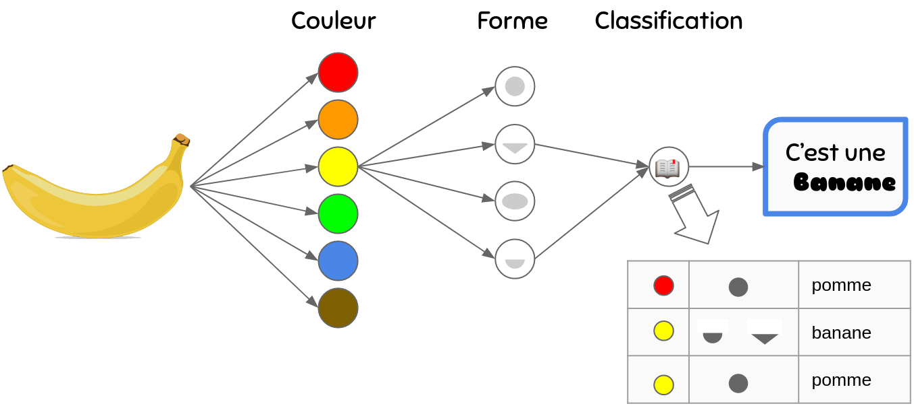
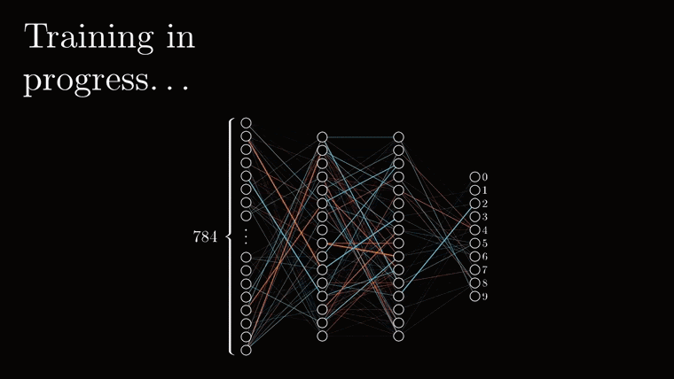
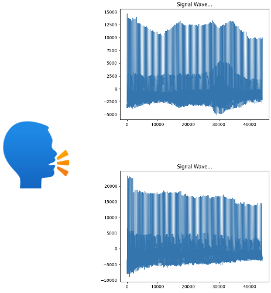
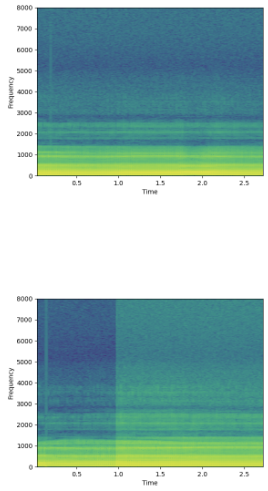
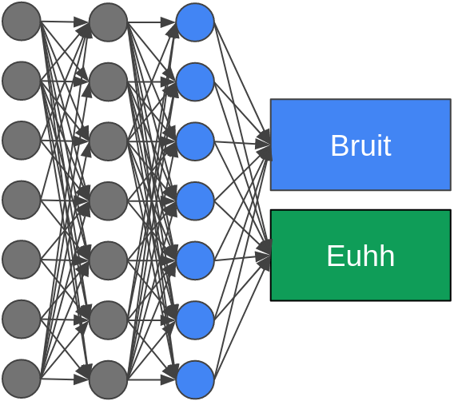
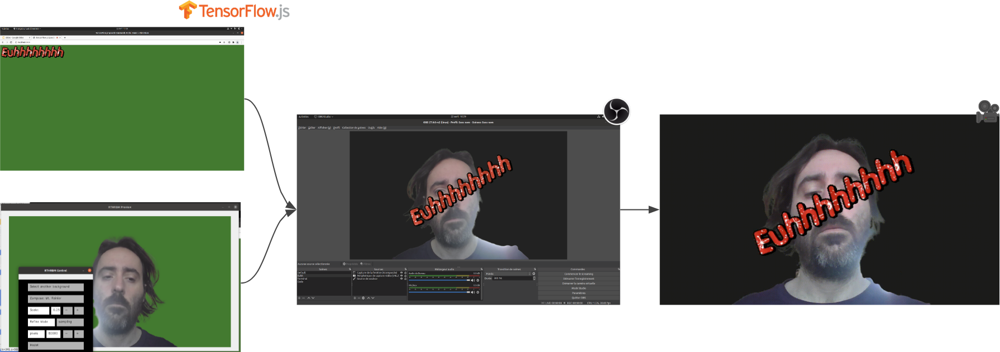

Euuhh
Code et présentation https://github.com/louiznk/devfest-nantes-euuhh (ou https://tinyurl.com/devfesteuhh)
Qui sommes nous
|
 |
Pierre Morvan
@ Zenika Paris |
Louis Tournayre
@ Zenika Lyon |
🔥 nos domaines c’est le dev Back, le “DevOps”, pas l’IA…. (ni le dev Front) 🔥
Et on a pas vocation de faire ...

Teachable & under the hood => Keras/Tensorflow
Zoom sur les réseaux de neurones
Principes réseaux de neurones

Principes réseaux de neurones
L'entraînement & backpropagation

La voix dans ce modèle
Voix, sa représentation et pourquoi
|

|

|

|

|
Explication du flux de traitement
Du “euhh” entendu à 🐮, c'est 🤪 time
Une présentation avec Tensorflow
- revealjs pour les slides au format web
- tensorflow.js pour utiliser le modèle généré
- et un peu de html et javascript pour lié cela
L'intégration de Tensorflow.js
L'ajout du "header" dans revealjs
La version pour le remote
Comment ça marche ?

Durant de cette présentation
Aucun animal et aucun émoji n'ont été maltraités 💚
🙏 ❓
Références
- Exemple classification audio avec keras https://www.tensorflow.org/tutorials/audio/simple_audio
- Repos du code https://github.com/louiznk/devfest-nantes-euuhh
- Présentation online https://louiznk.github.io/devfest-nantes-euuhh/
- Backpropagation https://www.youtube.com/watch?v=Ilg3gGewQ5U
- TeachableMachine https://teachablemachine.withgoogle.com/
- OBS / MachineLearning https://thecodingtrain.com/CodingChallenges/157-zoom-annotations.html